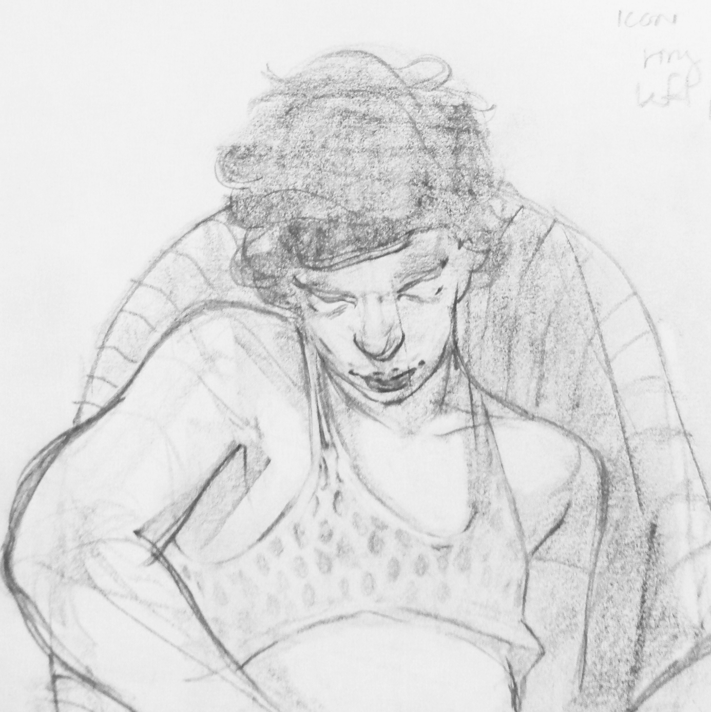

Born in 1993 in Dayton, Ohio. Alexander is an undergrad at the Maryland Institute College of Art soon to complete his BFA in Painting.
Statement
Alexander's most recent works investigate the narratives and ranges of emotions that can potentially be experienced during the confines of a romantic affair.
These issues are expressed through (but not limited to) large oil paintings and drawings.
These medium allows him to have complete control of how the image is constructed and how the content is perceived, which leaves a lot of room for ambiguity and androgyny.
The landscape is used a metaphor to set the stage for these emotionally charged situations while the figures are enveloped within it. These paintings are created so personal nostalgic events can be re-experienced in a more beautiful way regardless of how untruthful or exaggerated the image ultimately is.
Work
Paintings
Recent Works Drawings
Work
Design
PostersMiscellaneousWeb
CV
Resume & Accomplishments
Born in 1993 in Dayton, Ohio. Alexander is an undergrad at the Maryland Institute College of Art soon to complete his BFA in Painting.
Statement
Alexander's most recent works investigate the narratives and ranges of emotions that can potentially be experienced during the confines of a romantic affair.
These issues are expressed through (but not limited to) large oil paintings and drawings.
These medium allows him to have complete control of how the image is constructed and how the content is perceived, which leaves a lot of room for ambiguity and androgyny.
The landscape is used a metaphor to set the stage for these emotionally charged situations while the figures are enveloped within it. These paintings are created so personal nostalgic events can be re-experienced in a more beautiful way regardless of how untruthful or exaggerated the image ultimately is.